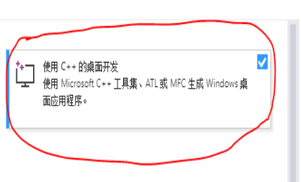

步骤：
1.安装Visual C++，目前最新是2019版
安装工作负载c++桌面开发

2.pip3安装模块
pip3 install pure-sasl==0.5.1
pip3 install thrift-sasl==0.2.1 --no-deps
pip3 install thrift==0.9.3
pip3 install impyla==0.14.1
pip3 install bitarray==0.8.3
pip3 install thriftpy==0.3.9安装时报错：
# TypeError: can't concat str to bytes
3.改错
编辑 python安装目录/site-packages/thrift_sasl/__init__.py
# 定位到错误的最后一条，在init.py第94行 (注意代码的缩进)
header = struct.pack(">BI", status, len(body))
self._trans.write(header + body)更改为：
header = struct.pack(">BI", status, len(body))
if(type(body) is str):
body = body.encode()
self._trans.write(header + body)4.重新pip安装